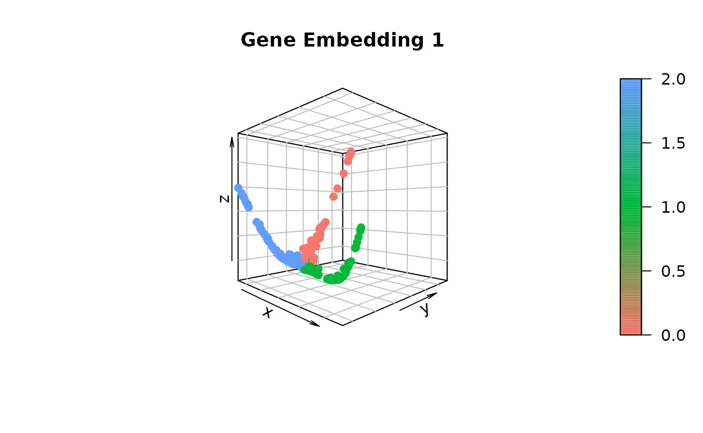
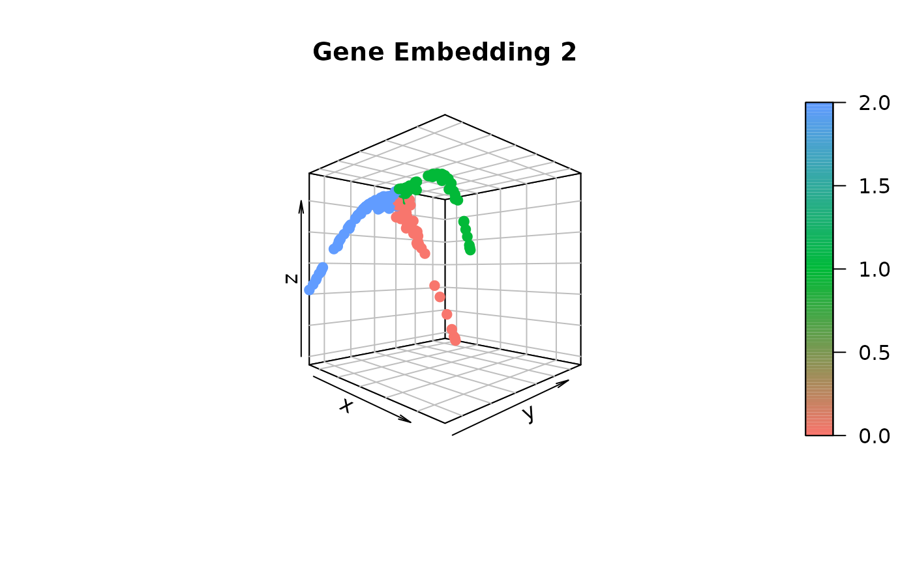
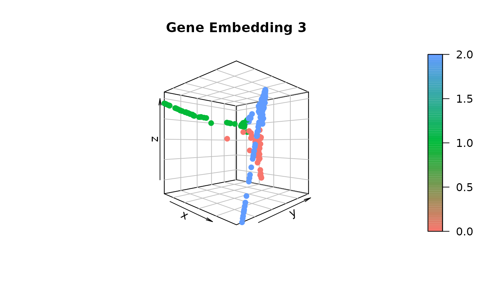

fast_computation.RmdIn practice, computing the Wasserstein distance between all pairwise gene distri- butions can be computationally expensive. When the cell graph is large, the time cost for finding the optimal transport solution increases exponentially. In our framework, we have designed two strategies to accelerate the computation based on 1) cell graph coarse-graining, and 2) gene graph sparsification. Briefly, cell graph coarse-graining aims to reduce the cell number by aggregating nearest cells into “meta-cells”. Gene graph sparsification aims to skip the computation for two gene distributions if they are very far away from each other at a coarse-grained level, as they are unlikely to participate in the same biological process. We note that while coarse-graining the cell graph to a crude scale can make it fast for computation, it may lose accuracy and compromise the resolution. Hence users should judiciously choose the level of coarse graining based on the capacity of their computing resources.
##### Load required R libraries
library(Seurat)
require(scales)
require(ggplot2)
require(viridis)
require(dplyr)
require(GeneTrajectory)
require(Matrix)
require(plot3D)
library(FNN)The preprocessed Seurat object for this tutorial can be downloaded from figshare.
# Import the tutorial dataset
data_S <- readRDS("../../data/human_myeloid_seurat_obj.rds")
# In this tutorial, we demonstrate gene-gene distance computation by selecting the genes expressed by 1% to 50% of cells among the top 500 variable genes.
assay <- "RNA"
DefaultAssay(data_S) <- assay
data_S <- FindVariableFeatures(data_S, nfeatures = 500)
all_genes <- data_S@assays[[assay]]@var.features
expr_percent <- apply(as.matrix(data_S[[assay]]@data[all_genes, ]) > 0, 1, sum)/ncol(data_S)
genes <- all_genes[which(expr_percent > 0.01 & expr_percent < 0.5)]
length(genes)## [1] 251
# Compute the Diffusion Map cell embedding
data_S <- GeneTrajectory::RunDM(data_S)
# Calculate cell-cell graph distances over a cell-cell kNN graph
cell.graph.dist <- GetGraphDistance(data_S, K = 10)## Constructing kNN graph## Constructing graph distance matrix## The largest graph distance is 35
# Create a virtualenv using reticulate for gene-gene distance computation
if(!reticulate::virtualenv_exists('gene_trajectory')){
reticulate::virtualenv_create('gene_trajectory', packages=c('gene_trajectory'))
}
reticulate::use_virtualenv('gene_trajectory')
# Import the function to compute gene-gene distances
cal_ot_mat_from_numpy <- reticulate::import('gene_trajectory.compute_gene_distance_cmd')$cal_ot_mat_from_numpyTo improve computation efficiency, we coarse-grain the cell graph by
grouping cells into N “meta-cells”.
# Example: coarse-grain the cell graph by grouping cells into `N`=500 "meta-cells"
cg_output1 <- CoarseGrain(data_S, cell.graph.dist, genes, N = 500)
gene.dist.mat1 <- cal_ot_mat_from_numpy(ot_cost = cg_output1[["graph.dist"]], gene_expr = cg_output1[["gene.expression"]])
# Example: coarse-grain the cell graph by grouping cells into `N`=1000 "meta-cells", which will take a longer time to complete as compared with using `N`=500 "meta-cells". However, it can better preserve the local geometry of the cell graph.
cg_output2 <- CoarseGrain(data_S, cell.graph.dist, genes, N = 1000)
gene.dist.mat2 <- cal_ot_mat_from_numpy(ot_cost = cg_output2[["graph.dist"]], gene_expr = cg_output2[["gene.expression"]])We sparsify the gene affinity graph by zeroing out the entries where their pairwise Wasserstein distances are greater than a threshold. The threshold is selected such that affinities associated with distances greater than it will be exponentially small and thus contribute negligibly to the gene affinity graph. The threshold is adaptively estimated for each cell using the approximate Wasserstein distance on a coarse-grained cell graph (Strategy 1) which allows fast computation.
Specifically, this is formulated in the following way: if we want to construct the gene-gene Wasserstein distance matrix on a cell graph of a size \(m\), we first coarse-grain \(m\) cells into \(m′\) “meta-cells” using the procedure in Strategy 1 where \(m′\) is a size that can be quickly handled. Based on the gene-by-gene Wasserstein distance matrix constructed on \(m′\) “meta-cells”, we identify the \(αk\) nearest neighbors for each gene (where \(α\) is the predefined parameter (ideally, choosing \(α \geq k\)) and \(k\) is the neighborhood size to construct the local adaptive kernel for computing the gene Diffusion Map embedding in the next step). Going back to the computation on the original cell graph, we then only compute the Wasserstein distance between a pair of genes if one of them is included in the other’s \(αk\) nearest neighbors. Practically, this can reduce the running time to \(2αk/m\) of the original which computes Wasserstein distances for all pairs of genes.
Below shows an example of computing gene-gene distances over the
original cell graph, utilizing the precomputed gene-gene distance matrix
on N = 500. Here, we choose \(α=5\), \(K=5\).
alpha = 5
K = 5
knn.index <- get.knn(gene.dist.mat1, k=alpha*K)$nn.index
gene.pairs <- cbind(rep(1:nrow(knn.index), each = ncol(knn.index)), as.integer(t(knn.index)))
gene.pairs <- gene.pairs[which(gene.pairs[,1] < gene.pairs[,2]),]
gene.dist.mat3 <- cal_ot_mat_from_numpy(ot_cost = cell.graph.dist, gene_expr = t(as.matrix(data_S[[assay]]@data[genes,])), gene_pairs = gene.pairs-1L) # Here, using -1L is to match the indexing criterion in Python.
# Construct the gene embedding by employing Diffusion Map
gene_embedding1 <- GetGeneEmbedding(gene.dist.mat1, K = 5)$diffu.emb
gene_embedding2 <- GetGeneEmbedding(gene.dist.mat2, K = 5)$diffu.emb
gene_embedding3 <- GetGeneEmbedding(gene.dist.mat3, K = 5)$diffu.emb
# Extract gene trajectories using gene_embedding1 and project onto gene_embedding2 and gene_embedding3 for visual comparison
gene_trajectory <- ExtractGeneTrajectory(gene_embedding1, gene.dist.mat1, N = 3, t.list = c(4,7,7), K = 5)
# Visualize gene_embedding1
scatter3D(gene_embedding1[,1],
gene_embedding1[,2],
gene_embedding1[,3],
bty = "b2", colvar = as.integer(as.factor(gene_trajectory$selected))-1,
main = "Gene Embedding 1", pch = 19, cex = 1, theta = 45, phi = 0,
col = ramp.col(c(hue_pal()(3))))
# Visualize gene_embedding2
scatter3D(gene_embedding2[,1],
gene_embedding2[,2],
gene_embedding2[,3],
bty = "b2", colvar = as.integer(as.factor(gene_trajectory$selected))-1,
main = "Gene Embedding 2", pch = 19, cex = 1, theta = 45, phi = 0,
col = ramp.col(c(hue_pal()(3))))
# Visualize gene_embedding3
scatter3D(gene_embedding3[,1],
gene_embedding3[,2],
gene_embedding3[,3],
bty = "b2", colvar = as.integer(as.factor(gene_trajectory$selected))-1,
main = "Gene Embedding 3", pch = 19, cex = 1, theta = 45, phi = 0,
col = ramp.col(c(hue_pal()(3))))
## R version 4.3.1 (2023-06-16)
## Platform: x86_64-pc-linux-gnu (64-bit)
## Running under: Ubuntu 22.04.3 LTS
##
## Matrix products: default
## BLAS: /usr/lib/x86_64-linux-gnu/blas/libblas.so.3.10.0
## LAPACK: /usr/lib/x86_64-linux-gnu/openblas-pthread/liblapack.so.3; LAPACK version 3.10.0
##
## locale:
## [1] LC_CTYPE=en_US.UTF-8 LC_NUMERIC=C
## [3] LC_TIME=en_US.UTF-8 LC_COLLATE=en_US.UTF-8
## [5] LC_MONETARY=en_US.UTF-8 LC_MESSAGES=en_US.UTF-8
## [7] LC_PAPER=en_US.UTF-8 LC_NAME=C
## [9] LC_ADDRESS=C LC_TELEPHONE=C
## [11] LC_MEASUREMENT=en_US.UTF-8 LC_IDENTIFICATION=C
##
## time zone: America/New_York
## tzcode source: system (glibc)
##
## attached base packages:
## [1] stats graphics grDevices utils datasets methods base
##
## other attached packages:
## [1] FNN_1.1.3.2 plot3D_1.4 Matrix_1.6-0
## [4] GeneTrajectory_1.0.0 dplyr_1.1.3 viridis_0.6.4
## [7] viridisLite_0.4.2 ggplot2_3.4.3 scales_1.2.1
## [10] SeuratObject_4.1.3 Seurat_4.3.0.1
##
## loaded via a namespace (and not attached):
## [1] RColorBrewer_1.1-3 rstudioapi_0.15.0 jsonlite_1.8.7
## [4] magrittr_2.0.3 spatstat.utils_3.0-3 farver_2.1.1
## [7] rmarkdown_2.24 fs_1.6.3 ragg_1.2.5
## [10] vctrs_0.6.3 ROCR_1.0-11 memoise_2.0.1
## [13] spatstat.explore_3.2-3 htmltools_0.5.6 sass_0.4.7
## [16] sctransform_0.3.5 parallelly_1.36.0 KernSmooth_2.23-22
## [19] bslib_0.5.1 htmlwidgets_1.6.2 desc_1.4.2
## [22] ica_1.0-3 plyr_1.8.8 plotly_4.10.2
## [25] zoo_1.8-12 cachem_1.0.8 misc3d_0.9-1
## [28] igraph_1.5.1 mime_0.12 lifecycle_1.0.3
## [31] pkgconfig_2.0.3 R6_2.5.1 fastmap_1.1.1
## [34] fitdistrplus_1.1-11 future_1.33.0 shiny_1.7.5
## [37] digest_0.6.33 rARPACK_0.11-0 colorspace_2.1-0
## [40] patchwork_1.1.3 rprojroot_2.0.3 tensor_1.5
## [43] RSpectra_0.16-1 irlba_2.3.5.1 textshaping_0.3.6
## [46] progressr_0.14.0 fansi_1.0.4 spatstat.sparse_3.0-2
## [49] httr_1.4.7 polyclip_1.10-4 abind_1.4-5
## [52] compiler_4.3.1 withr_2.5.0 highr_0.10
## [55] MASS_7.3-60 tools_4.3.1 lmtest_0.9-40
## [58] httpuv_1.6.11 future.apply_1.11.0 goftest_1.2-3
## [61] glue_1.6.2 nlme_3.1-162 promises_1.2.1
## [64] grid_4.3.1 Rtsne_0.16 cluster_2.1.4
## [67] reshape2_1.4.4 generics_0.1.3 gtable_0.3.4
## [70] spatstat.data_3.0-1 tidyr_1.3.0 data.table_1.14.8
## [73] sp_2.0-0 utf8_1.2.3 spatstat.geom_3.2-5
## [76] RcppAnnoy_0.0.21 ggrepel_0.9.3 RANN_2.6.1
## [79] pillar_1.9.0 stringr_1.5.0 later_1.3.1
## [82] splines_4.3.1 lattice_0.21-8 survival_3.5-5
## [85] deldir_1.0-9 tidyselect_1.2.0 miniUI_0.1.1.1
## [88] pbapply_1.7-2 knitr_1.43 gridExtra_2.3
## [91] scattermore_1.2 xfun_0.40 matrixStats_1.0.0
## [94] stringi_1.7.12 lazyeval_0.2.2 yaml_2.3.7
## [97] evaluate_0.21 codetools_0.2-19 tcltk_4.3.1
## [100] tibble_3.2.1 cli_3.6.1 uwot_0.1.16
## [103] xtable_1.8-4 reticulate_1.35.0 systemfonts_1.0.4
## [106] munsell_0.5.0 jquerylib_0.1.4 Rcpp_1.0.11
## [109] globals_0.16.2 spatstat.random_3.1-6 png_0.1-8
## [112] parallel_4.3.1 ellipsis_0.3.2 pkgdown_2.0.7
## [115] listenv_0.9.0 ggridges_0.5.4 leiden_0.4.3
## [118] purrr_1.0.2 rlang_1.1.1 cowplot_1.1.1